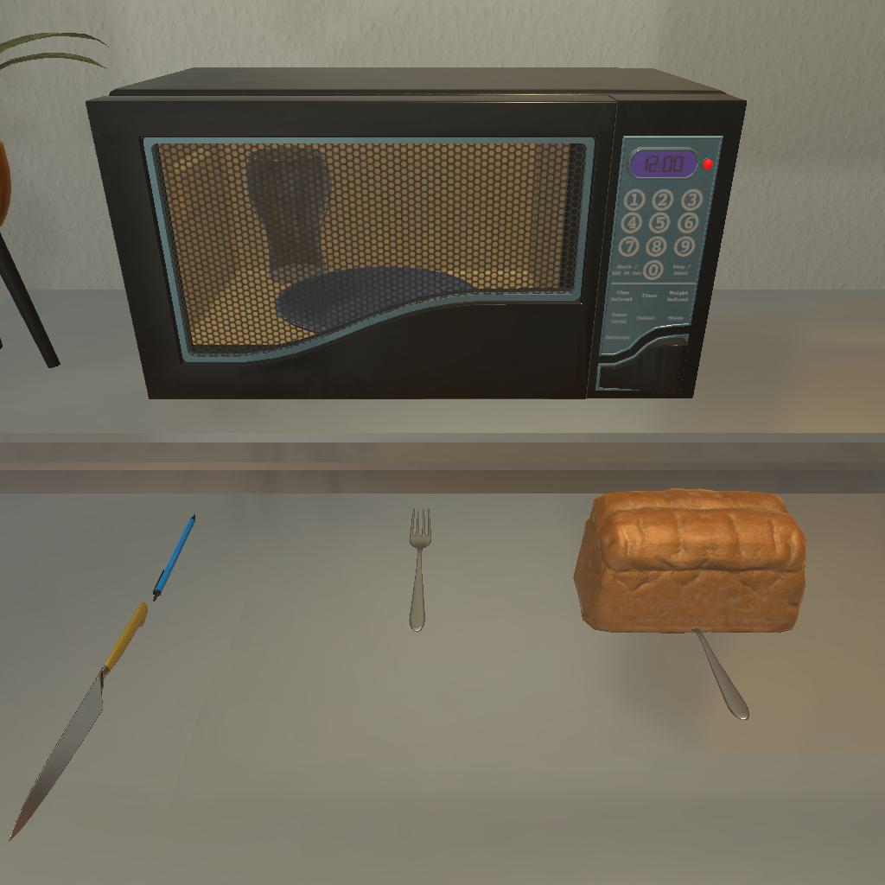

---------------------------------------------------------task: 22---------------------------------------------------------
--------------------------------------------------------------------------------------------------------------------------------------------------------------------
--------------------------------------------------------------------------------------------------------------------------------------------------------------------
Step:--------------------------------------------------------------------------3-------------------------------------------------------------------------------
----------------------------------------
VLM Prompt:
Image1:
Image2:
**Instruction**
1. Analyze the provided images to identify all visible household objects and compare the difference between images (e.h. whether the object is opened or not and taken on hand or not), focusing on those relevant to the task description "put a hot egg in countertop."
2. Use the analysis of images and the task hint "The agent must find an object of the desired type, pick it up, go to a microwave, heat the object with the microwave, then find the correct location to place it, and put it down there. The agent does not need to use the microwave button or open the microwave to heat the object, and the agent just needs to do action that is "heat the object with the microwave"." to answer the question: what is the most reasonable action in the choices for the task description "put a hot egg in countertop"?
3. Decide and write the answer using the template: The answer is: (i): , where i is the real number. If there is no desired object in images, search every place based on **Initial Observation** to find the object. And if no one is exactly correct, choose a similar answer.
**Initial Observation**
You are in the middle of a room. Looking quickly around you, you can see cabinet (1-18), countertop (1-4), sink (1), drawer (1-7), sinkbasin (1), coffeemachine (1), microwave (1), garbagecan (1), stoveburner (1-4), toaster (1), fridge (1)
**Answer Choices**
(1): go to cabinet 2
(2): go to countertop 1
(3): go to cabinet 3
(4): go to cabinet 4
(5): go to cabinet 5
(6): go to sink 1
(7): go to cabinet 6
(8): go to drawer 1
(9): go to drawer 2
(10): go to sinkbasin 1
(11): go to cabinet 7
(12): go to cabinet 8
(13): go to coffeemachine 1
(14): go to cabinet 9
(15): go to countertop 2
(16): go to cabinet 10
(17): go to drawer 3
(18): go to drawer 4
(19): go to garbagecan 1
(20): go to drawer 5
(21): go to cabinet 11
(22): go to cabinet 12
(23): go to cabinet 13
(24): go to cabinet 14
(25): go to stoveburner 1
(26): go to countertop 3
(27): go to stoveburner 2
(28): go to stoveburner 3
(29): go to stoveburner 4
(30): go to drawer 6
(31): go to cabinet 15
(32): go to cabinet 16
(33): go to cabinet 17
(34): go to cabinet 18
(35): go to toaster 1
(36): go to drawer 7
(37): go to countertop 4
(38): open cabinet 1
(39): close cabinet 1
(40): examine cabinet 1
**Answer**
Let's think step by step by following the instructions.
----------------------------------------
----------------------------------------
Original Response:
Image Analysis:
- Image1 shows a microwave and a loaf of bread on a countertop, along with a knife and a fork.
- Image2 shows a closed cabinet.
Comparing both images, there are no visible eggs or any actions related to heating or placing an object on the countertop.
Task Analysis:
Based on the task description of "put a hot egg in countertop," the agent needs to find an egg, heat it in the microwave, and then place it on the countertop.
Since there are no eggs visible in the provided images, the agent needs to search for the egg. The initial observation lists various cabinets, drawers, and other kitchen appliances where an egg might be found.
The agent does not need to use the microwave button or open the microwave to heat the object; the action is simply "heat the object with the microwave."
Answer Choices Analysis:
The answer choices provided are all related to moving to various locations or interacting with a cabinet. Since the egg is not visible, the agent will need to search for it. Cabinets are a common place where eggs could be stored.
Therefore, the most reasonable action for the task description "put a hot egg in countertop" would be to start by looking in the cabinets.
The answer is: (1): go to cabinet 2
This choice is selected because it is the first cabinet option listed, and it makes sense to start searching sequentially from the first cabinet. If the egg is not found in cabinet 2, the agent can proceed to search the other cabinets.
----------------------------------------
----------------------------------------
>>> Refine Original VLM Response and Get Pure Action: go to cabinet 2
This choice is selected because it is the first cabinet option listed, and it makes sense to start searching sequentially from the first cabinet
----------------------------------------
-----------------------------------------------------------------
Running time: 11.622044086456299 seconds
Total Money: 11.025640000000003
-----------------------------------------------------------------
-----------------------------------------------------------------
Text Observation:Nothing happens.
-----------------------------------------------------------------
UNSUCCEED